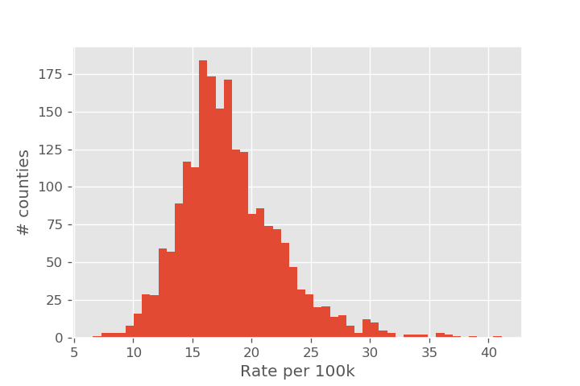
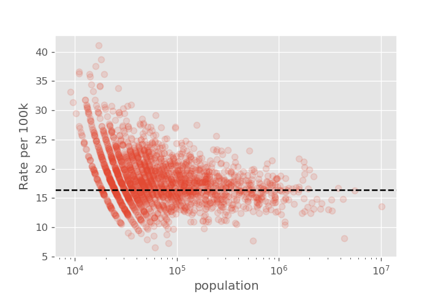
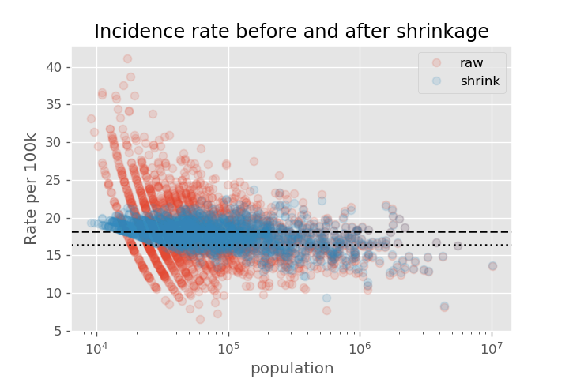
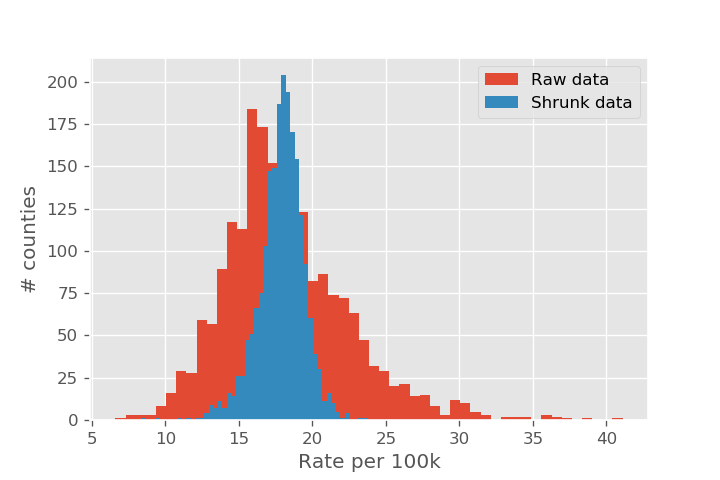

Shrinkage and Empirical Bayes to improve inference
There is a common problem when ranking items: if we just average the observations, fluctuations tend to make the very best (and very worst) items be those with very few observations. Consider the following three examples:
- We are trying to measure the batters with the best hit rate. A rookie that has hit 2 balls out of 2 at-bats would have a hit rate of 1.0, handily beating Barry Bond's career hit rate of 0.306. To get hit rates over 0.300 is rare in major league baseball, so we are confident that the rookie's actual hit rate isn't 1.000.
- When looking at kidney cancer incidence rates per county. It is a relatively rare disease, with the bottom rate being 6.6 per 100k in Garfield County (4 out of 60000), and a highest rate of 41.1 per 100k in Cass County (7 out of 17000). Having just one fewer person diagnosed with kidney cancer in Cass County would drop the rate to 35.2 per 100k. There are 63 counties that where the 95% confidence interval in the rate exceeds 41.1 per 100k.
- We are trying to measure the rating of a book. A book with two 5 star ratings probably isn't better than a book with ten thousand ratings that average to 4.85.
In each of these cases, just measuring the average over all items isn't useful. We want to know what the hit rate is of an individual player, the counties that have abnormally high kidney cancer rates, or the our best estimate of the actual book. One way of approaching this would be to have a cutoff and refuse to make any inference before we had "enough" data.
Empirical Bayes approaches this problem differently. We use the entire population (that is, all players, all counties, or all books) to estimate what a "typical" result looks like. If we had no batting data, for example, we can still say based on all major league players that a given player is likely to have a hit rate between 0.2 and 0.3. We use this as the prior. This is the empirical part. As we collect more and more data, we use Bayes's rule to update our prior. When we have only a little bit of data on a player, county, or book, the prior is important for keeping our estimates grounded. As we get more data, the initial prior becomes less and less important, which matches our intuition that the large fluctuations needed to significantly bias large datasets are rare.
This general technique of moving the observed data toward the mean is also called "shrinkage" (although maybe "regression", as in "regression to the mean" would be a better name).
David Robinson has already given an excellent treatment of empirical Bayes in the context of baseball statistics on his blog, variance explained. We will look at the two other examples above in this blog post:
- We will look at the kidney cancer rates per county. This example has been discussed in "Thinking Fast and Slow" by Daniel Kahneman. The data set is available here
- We will look at the ratings of boardgames given at boardgamegeek. This problem was inspired by the 538 article "". In this case, the ratings were not shrunk, so games with fewer reviews typically showed more variance. The data set for this problem is available here.
By using these two examples, we can show how to apply the empirical Bayes's technique of "shrinking" (or regressing) our observed values toward the mean when estimating a proportion (kidney cancer rates) as well as a continuous variable (board game ratings).
Case study 1: Shrinking proportions with kidney cancer data
Let's start by getting an overall view of the kidney cancer rates. Our first attempt might be to simply make a histogram of the kidney cancer rate.

It is relatively simple to identify the lowest and highest observed rates directly from the histogram. But by displaying this data as a histogram, we haven't displayed the sample size of each county, so it isn't clear how reliable each of the individual measurements are. The story looks very different once we add population size as an axis. The overall average rate (as measured over the entire US) is shown as a dashed line.

We see that there is a lot more variation in cancer rates for the counties with small populations, with the variation getting smaller as we go to larger counties. This is the type of behavior we expect from statistical fluctuations!
Overview of method
We are going to assume that each county \(i\) is described by a kidney cancer rate, \(p_i\). The \(p_i\) are randomly distributed according to the histogram of kidney cancer rates we plotted earlier. That is, if we had a probability distribution that matched the shape of this histogram, we could tell how likely it was that a particular cancer rate \(p_i\) was observed.
It is convenient if we can model this process using a \(\beta\)-distribution. The \(\beta\) distribution is described by two parameters, s0 and f0, which we can think of as "banked" successes and failures. If we observe s_i actual sick people in a county, and f_i heathy people in the county, then the naive calculation for the rate people are getting sick is
The empirical Bayes method would adjust this estimate to
One way of thinking about this result is that we are pretending that we have s0 sick people and f0 healthy people that are not actually part of our population. When calculating the rate, we still look at the ratio of sick people to the total, but we also include the (s0 + f0) "imaginary people" we are using to represent the rest of the population.
Step 1: Use population data to get prior
Since we are modeling a binomial process (in each county, an individual either does or does not get sick), it is convenient if we can model this distribution with a \(\beta\)-distribution. One way of doing this is called the "method of moments", where we find s0 and f0 to make the mean and variance of the beta distribution match the mean and variance of our data. The formula are
If we apply the method of moments to this data, we find s0 and f0 as negative numbers! i.e. there is no choice of (valid) parameters that make a beta distribution where the mean and variance match.
Instead of trying to match mean and variance, we can use the built-in fit method for finding the paramters:
from scipy.stats import beta
s0, f0, *_ = beta.fit(incidence['Rate_per_100k']/1e5, floc=0., fscale=1.)
We can visualize how well this plot did with the following code, using beta.pdf with our parameters to plot our fitted beta distribution.
plt.figure(dpi=130)
X = np.linspace(0, 0.001, 200)
plt.plot(X, beta.pdf(X, a=s0, b=f0, loc=0, scale=1), label='Beta dist')
plt.hist(incidence['Rate_per_100k']/1e5, bins=50, normed=True, label='data')
plt.xlim(0,5e-4)
plt.title('Best fit beta distribution')
plt.legend()
plt.xlabel('Prob of Kidney Disease')
plt.ylabel('PDF');

The fit isn't terrible, but a slightly smaller lump around 0.00023 suggests we might have two different mixed beta distributions. We could improve the fit slightly by modeling our prior as two beta distributions, but this would complicate our shrinkage. We still find a reasonable fit with s0 and f0.
The downside to using the best-fit method is that the average rate is shrunk toward the average of the beta distribution, not the average of the data. We can find the average of the beta distribution directly from the parameters s0 and f0:
By comparison, the average from the data is 16.1 per 100k.
Step 2: Use prior to "shrink" estimates to population values
Our dataframe has the following columns:
'average_annual_count': the number of people in the county that we found the disease.'population': the population of the people in the country.
To get our empirical bayes estimate needs us to add s0 to the number of detected cases, and s0 + f0 to the population. We have
incidence['shrinkage'] = 1e5*(incidence['average_annual_count'] + s0)/(incidence['population'] + s0 + f0)
Let's compare what the rates looked like before and after the shrinkage. We recreate the plot of cancer rate vs population. Note the shrinkage effect is much larger for the smaller populations. We also show the dashed line that we shrink toward (approx 18 per 100k), as well as the average of the actual data as the dotted line (approx 16 per 100k).

Now that we have our best estimate based on the sample size, we can plot a histogram of the adjusted rate.
